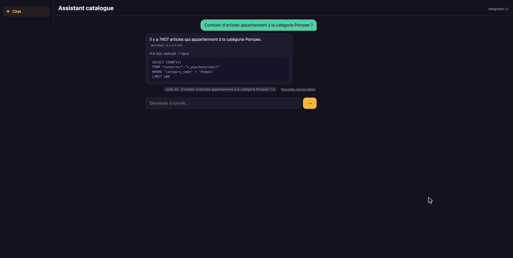
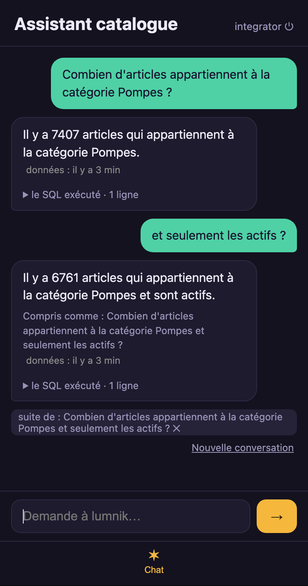

Question 40,000 products, with the SQL shown.
Two CSV exports, one entity, an app reduced to chat. The question becomes a read-only query; the answer shows its SQL.
manifests/10-products.yaml
apiVersion: connectors.lumnik.io/v1kind: Connectormetadata: name: pwa-chat-products connector_type: csv-file scopes: [pwa-chat]spec: transport: kind: local path: /tmp/lumnik-scenario/pwa_chat/m_product.csv parser: has_header: true after_process: none mapping: dataset: - require-headers: columns: [m_product_id, m_product_category_id, name, description, isactive] cell: - clean: columns: [name, description] strip: true remove-control-chars: true normalize-unicode: NFC - strip-invisible: { columns: [name] } - replace-smart-quotes: { columns: [description] }manifests/15-product-categories.yaml
apiVersion: connectors.lumnik.io/v1kind: Connectormetadata: name: pwa-chat-product-categories connector_type: csv-file scopes: [pwa-chat]spec: transport: kind: local path: /tmp/lumnik-scenario/pwa_chat/m_product_category.csv parser: has_header: true after_process: none mapping: dataset: - require-headers: columns: [m_product_category_id, name, description, isactive] cell: - clean: columns: [name, description] strip: true remove-control-chars: true normalize-unicode: NFC - strip-invisible: { columns: [name] } - replace-smart-quotes: { columns: [name, description] } - decode-html-entities: { columns: [name, description] }$ lm validate -f manifests/10-products.yaml
✓ 10-products.yaml — valid
$ lm apply -f manifests/10-products.yaml
{"name":"pwa-chat-products","connectorId":"e8893df3-e318-4974-80ab-ee7722c669f4","endpointsApplied":1}
$ lm validate -f manifests/15-product-categories.yaml
✓ 15-product-categories.yaml — valid
$ lm apply -f manifests/15-product-categories.yaml
{"name":"pwa-chat-product-categories","connectorId":"34d48574-6dd7-4e5a-97d5-1efba352d638","endpointsApplied":1}
$ lm connector run pwa-chat-product-categories
run scheduled: abdf9a63-c6ea-4f46-bfd1-802c11d49221
$ lm run get abdf9a63-c6ea-4f46-bfd1-802c11d49221
ID CONNECTOR ENDPOINT STATUS IN OUT SKIPPED DEAD-LETTERS STARTED ENDED
abdf9a63 pwa-chat-product-categories default Completed 63 63 0 0 2026-10-21 15:47 2026-10-21 15:47
$ lm connector run pwa-chat-products
run scheduled: 15eb03af-78ef-468f-89f4-67b00d5771c4
$ lm run get 15eb03af-78ef-468f-89f4-67b00d5771c4
ID CONNECTOR ENDPOINT STATUS IN OUT SKIPPED DEAD-LETTERS STARTED ENDED
15eb03af pwa-chat-products default Completed 40233 40233 0 0 2026-10-21 15:47 2026-10-21 15:47- Connectors applied
- pwa-chat-products, pwa-chat-product-categories
evidence: replay.log · transform v1
manifests/20-product.yaml
kind: Entityname: PwaChatProductlabel: Article du cataloguedescription: "Articles du catalogue, enrichis avec leur catégorie. Une ligne représente un article."match: [product_id]scopes: [pwa-chat]columns: product_id: label: "Identifiant de l'article" category_id: label: "Identifiant de la catégorie" category_name: label: "Catégorie" category_description: label: "Description de la catégorie" reference: label: "Référence de l'article" description: label: "Description de l'article" active: label: "Article actif (Y pour oui, N pour non)"sources: - table: t_pwa_chat_products map: m_product_id: product_id m_product_category_id: category_id name: reference description: description isactive: activejoins: - table: t_pwa_chat_product_categories from: category_id to: m_product_category_id map: name: category_name description: category_description$ lm entity apply -f manifests/20-product.yaml
Applied entity "PwaChatProduct" → connector."v_pwachatproduct"- PwaChatProduct
- v_pwachatproduct
- Products in the entity
- 40233
evidence: replay.log · transform v1
manifests/30-pwa-chat-app.yaml
apiVersion: apps.lumnik.io/v1kind: Appmetadata: name: pwa-chatspec: title: Assistant catalogue scope: pwa-chat icon: generic theme: accentColor: "#4fd1a5" backgroundColor: "#f4f1ea" tabs: [chat] default: false$ lm app apply -f manifests/30-pwa-chat-app.yaml
Applied app "pwa-chat" → scope pwa-chat
tabs: chat- App
- pwa-chat
- Tabs
- chat
evidence: replay.log · transform v1


$ lm ask --scope pwa-chat --lang fr "Combien d'articles appartiennent à la catégorie Pompes ?"
Il y a 7407 articles qui appartiennent à la catégorie Pompes.
data as of: 2026-10-21T13:47:50.345786Z (last completed run)
COUNT
7407
1 row returned
SQL: SELECT COUNT(*)
FROM "connector"."v_pwachatproduct"
WHERE "category_name" = 'Pompes'
LIMIT 500- Answer
- Il y a 7407 articles qui appartiennent à la catégorie Pompes.
- SQL executed
- SELECT COUNT(*) FROM "connector"."v_pwachatproduct" WHERE "category_name" = 'Pompes' LIMIT 500
evidence: replay.log · transform v1
Limits
- Analytic queries over the entity; no semantic search in free text.
- Depends on a reachable model; the replay fails without it.
- Synthetic data.
- The data and the PWA are French: the screenshots show the app as a French user sees it.
This scenario needs lumnik Pro.
See the editions →